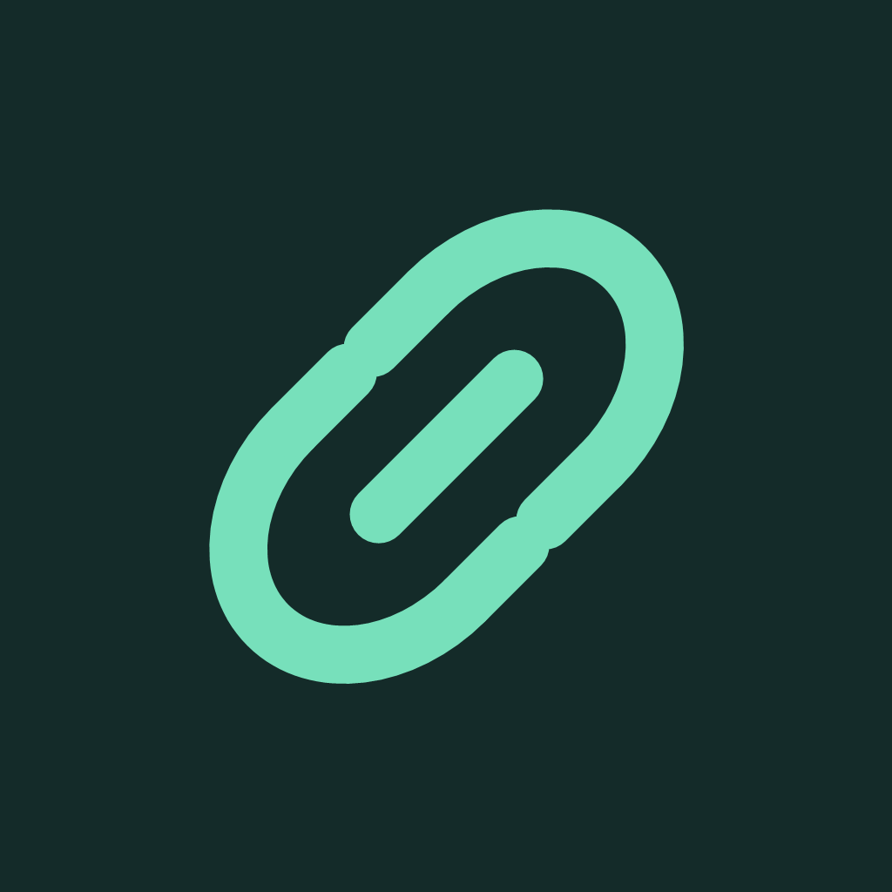

Fonte oficial gratuita de atualizações para o AltStore Classic. Navegador nativo para iPhone, iOS 16 ou superior.
Adicionar ao AltStore ClassicSe o botão não abrir sua versão do AltStore, use o link compatível anterior ou copie a URL abaixo em Sources → +.
https://largartozaulnj.github.io/linkcapture-ios-native/source.json
A associação da instalação antiga à fonte e a preservação dos dados precisam ser conferidas no iPhone. O Bundle ID original é org.linkcapture.experimental; o AltStore pode acrescentar o identificador da sua equipe ao reassinar.
SHA-256 e tamanhos verificados · Releases e alterações · Ajuda oficial do AltStore
O esquema documentado do AltStore Classic não define um campo de verificação SHA-256. Os hashes estão publicados separadamente; não afirmamos que o AltStore os valida.